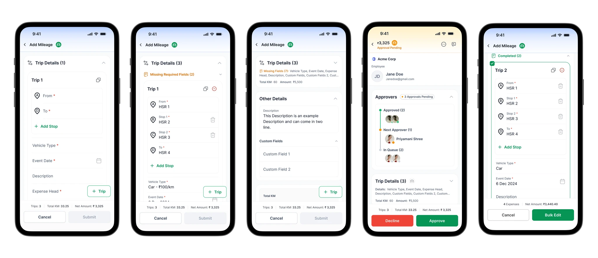
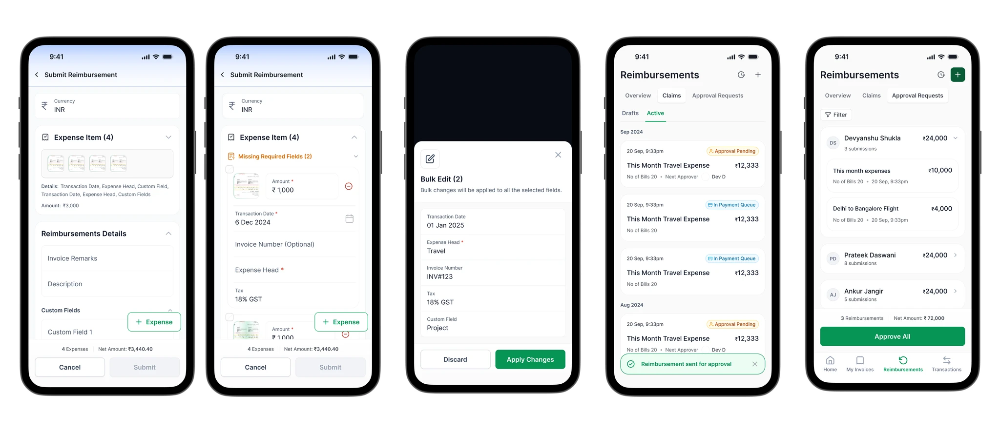
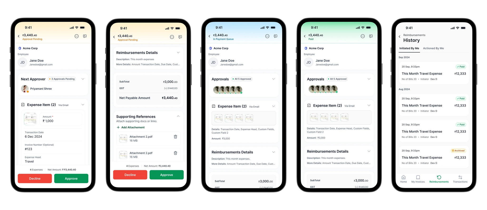

A reimbursement flow built for how people actually file claims.
Pazy's mobile reimbursement module supported one claim at a time. The people using it were filing eight at once, on a Sunday. We redesigned the flow around how member users actually behaved — and cut claim time roughly in half.

First, a quick word about Pazy.
Pazy is a B2B fintech platform. One of the things it does is reimbursements — on-ground staff (the platform calls them member users) submit work expenses through a mobile app, and finance teams at their company review and pay them out.
There are two kinds of claims:
- Mileage — calculated based on distance travelled.
- Expenses — receipts, meals, stays, tolls.
Each claim moves through the same path: submit → approve → payment queue → paid. Simple in theory. Painful in practice — because the submission side was built for one claim at a time, and almost nobody used it that way.
I worked with the PM and one developer on this. Design + reviews took roughly two weeks; the impact numbers below were captured about a month after launch, once the flow had a few real billing cycles behind it.
One-at-a-time, in a world that ships in batches.
The mobile module supported only one-at-a-time submissions. That mismatch caused four cascading problems:
- Submissions kept getting delayed. Frequent claimants travel and spend on weekdays, then file on weekends. A one-at-a-time flow made that batch session feel like a chore, so it kept slipping further.
- Repetitive manual entry burned trust. Five "cab to client" claims meant typing the same merchant, category, and cost-centre five times. Frustration grew faster than the list of claims.
- Support tickets piled up around payment status. With reimbursements settling in batches, users couldn't easily track what had been paid for what — and pinged finance to ask.
- Approvers were stuck reviewing one claim at a time. The downstream pain wasn't just the user side. Approvers spent meaningful time clicking through near-identical claims that should have been actioned as a group.
"I'm not filing one claim, I'm filing my whole week. Why does it keep asking me the same five questions?"
— Member user, journey-mapping interview
I interviewed 4 frequent submitters across two enterprise customers — users filing 5 or more reimbursements per week. Four insights came back consistently:
- Users wanted a quicker way to repeat similar claims (meals, travel) without re-entering details each time.
- Submissions happened in batches — usually on weekends — not in real time after each spend.
- During a bulk session, users wanted a simple progress indicator like "3 of 8 added".
- Because of delayed payouts, users forgot what they'd already claimed.
Two submitters, sharing one flow.
The mobile module is used by two very different people, and the redesign had to land for both:
- The frequent submitter — sales reps, drivers, technicians; anyone whose work day is built around movement. They file five-plus claims a week, almost always on a Sunday evening, almost always on their phone. They live inside the form's friction.
- The occasional submitter — managers and desk workers who file once or twice a month, usually for a single meal or a one-off purchase. They forget the flow each time — so clarity matters more to them than speed.

Stop designing for the first claim. Design for the eighth.
The research made the brief obvious. People weren't filing a claim — they were filing a session of claims. The form wasn't the problem; the shape of the interaction was. The product had to admit that, and the design had to follow.
The brief crystallised into a single question that stayed pinned next to the Figma file all week:
How do we make multi-claim submissions feel fast, light, and reliable — even on mobile?
Three principles fell out of that question and shaped every decision after:
- Continuity over completion. Submitting one claim should lead naturally into the next — no detour through a home screen, no resetting cognitive context.
- Duplication is a first-class action. "Same as the last one" is the most common case. It deserves one tap, not six fields.
- The list is always visible. The user should never wonder what's already in the batch.
A session-based flow with a visible, editable list.
Four pieces shipped together. Each one answers a friction surfaced in research; each image below shows the state being explained.
Multiple claims in one session
Each claim — mileage or expense — becomes an editable, removable card in a growing list. After submitting, the user lands back inside the same session, ready to add the next entry. No navigation maze, no context loss.

Duplicate-and-tweak
Tap "Duplicate" on any existing claim to reuse a previous entry — merchant, category, cost-centre carry forward — then just adjust the date or the amount. Recurring meals and local travel collapse into a few taps.

Bulk edit and delete
For the heaviest users — the field staff submitting 20+ entries — multi-select on the session list. Change cost-centre across ten claims at once, or delete a row that was clearly mistyped, without leaving the flow. Discoverable via long-press, but deliberately not heavy in the default UI.

A running list, always in view
Every claim in the current session sits as a card stacked above the entry form — scannable, editable, removable. A single submit action at the bottom seals the whole batch in one tap. No more "did I add that one already?"

A short brief means choosing what not to build.
Two choices worth being honest about. Both deliberate, both driven by a tight design window.
- Bulk actions intentionally low-key. Multi-select is powerful but easy to mis-tap. We hid it behind long-press rather than promoting it on the toolbar, accepting that discoverability would suffer in exchange for keeping the default experience calm. Power users found it. Casual users never tripped on it.
- Receipt OCR was a bonus, not a backbone. OCR existed, but it failed predictably on rotated photos. Rather than block the redesign on a model upgrade, we designed every screen to assume the user might need to type the amount themselves — OCR was the accelerator on top, never the path.
Half the time. Half the friction. Fewer support pings.
The number that mattered to the business was time-per-claim. The one that mattered to users was something quieter — the product finally working with their habit, not against it. Frequent submitters started filing as the week progressed instead of dreading Sunday. Approvers cleared cycle-end queues in one sitting instead of three. Finance stopped getting late-night Slack DMs about missing payouts.